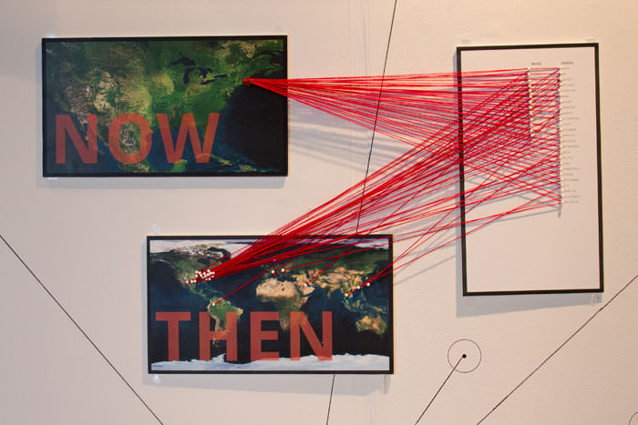
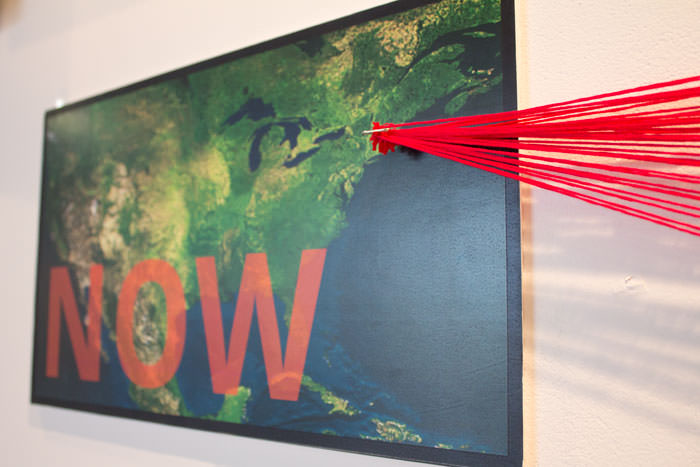

INHERENT CONNECTIONS


Networking may not always be the easiest thing to accomplish. It can be difficult to understand on the surface how two seemingly different groups can be intrinsically connected. Despite this, there lies potential connections between sets of people, and recognizing these commonalities lays the groundwork to expand one’s network. Sometimes by delving deeper into a person’s history, we can look past the obvious discrepancies between two professional circles, and begin to make connections between the two. A bond such as a shared home city or a mutual friend can lay the basis for two seemingly distinct groups to realize how connected they actually are.
This project takes two of my primary, yet contrasting networking groups (my graphic design class and my coworkers at Boston University Res life) and connects them through the two places they identify with the most; where they are now and where they are from. With this information I created a visually complex installation that emphasizes the connections and intersections these two groups make between and within each other.